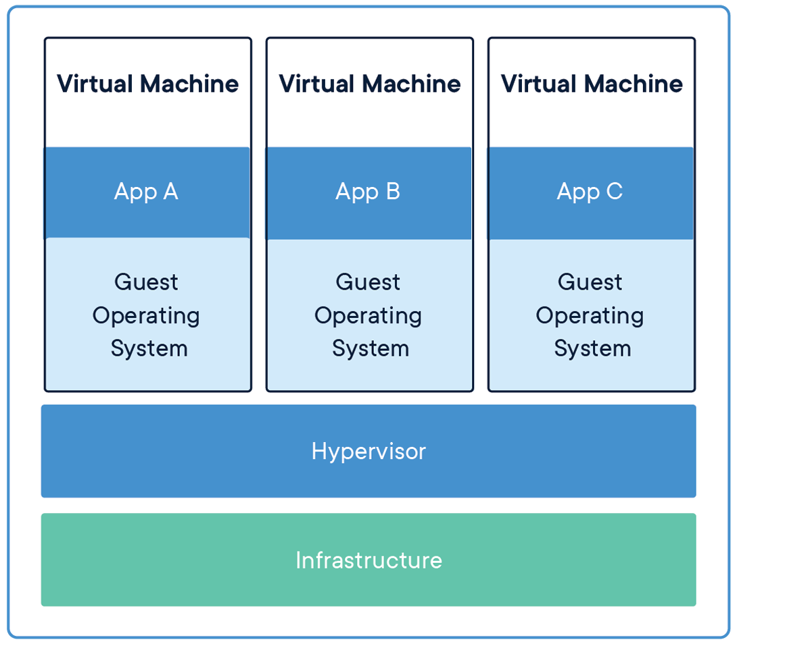
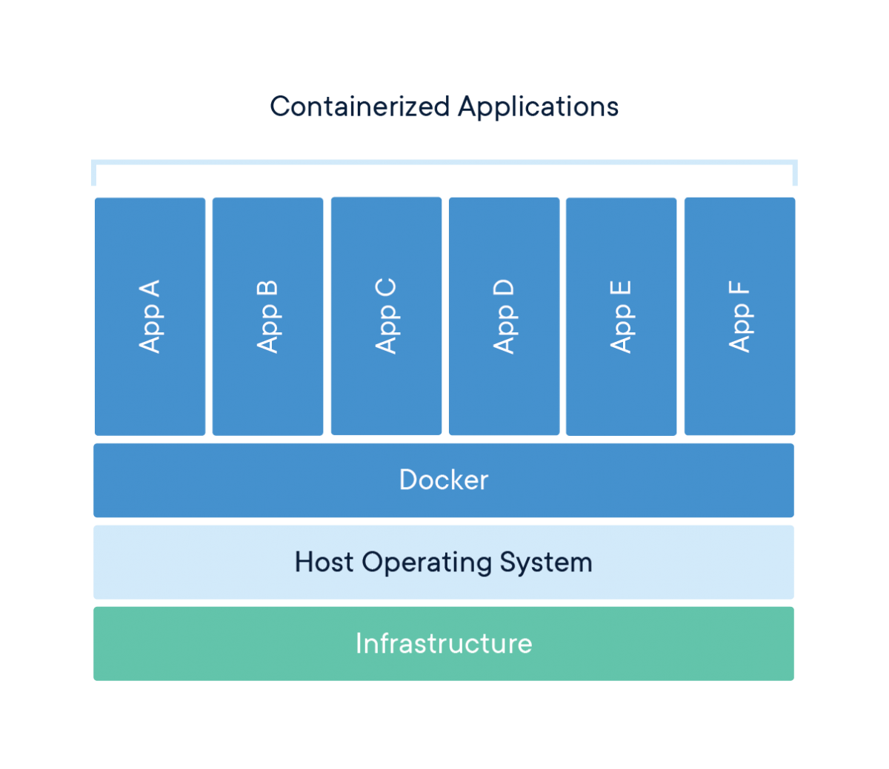

Docker: Novice to Journeyman

Containerization
Introduction
Containerization has revolutionized how we develop, deploy, and run software. At its core, containerization is a method of packaging an application along with all its dependencies—libraries, configuration files, and everything else it needs to run—into a standardized unit called a container. This container can then be reliably transported and run on any computing environment that supports containers.
Think of containers like standardized shipping containers used in global logistics. Before standardized shipping containers existed, loading and unloading cargo ships was inefficient and unpredictable—different-sized crates and packages made storage challenging and transportation slow. The introduction of uniform shipping containers revolutionized global trade by creating a standard unit that could be easily loaded, stacked, transported, and unloaded regardless of what was inside.
Software containers work on the same principle. Instead of shipping physical goods, we’re packaging software in a way that eliminates the traditional challenge of “it works on my machine but not in production.” Containers encapsulate the application and its environment, ensuring consistent behavior across different computing infrastructures—from a developer’s laptop to testing environments to production servers.
What makes containers particularly powerful for developers and system administrators is their combination of isolation and efficiency. Unlike traditional virtual machines that virtualize an entire operating system, containers share the host system’s kernel while maintaining strict isolation between applications. This makes them significantly more lightweight and faster to start than VMs, while still providing the necessary separation between applications.
For servers, containerization offers several benefits:
- Resource Efficiency: Containers have minimal overhead, making them perfect for the limited resources of a Raspberry Pi
- Isolation: Applications in containers won’t interfere with each other or the host system
- Reproducibility: Container definitions are code, making your server setup reproducible and version-controlled
- Portability: The same container can run on your Pi, your MacBook, or any other compatible system
- Simplified Deployment: Containers bundle all dependencies, eliminating complex installation procedures
- Easy Updates: Containers can be replaced rather than updated in-place, simplifying maintenance
In this guide, we’ll first explore the foundational concepts of containerization to build a solid understanding of the technology. Then, we’ll dive into Docker—the most popular containerization platform—and create a practical setup for a persistent Jupyter notebook server running on your Raspberry Pi. This container will allow you to use your MacBook as a client for development while leveraging the compute resources and persistent storage of your Pi server.
By the end of this guide, you’ll have both a theoretical understanding of containerization and practical experience implementing it, setting the stage for more advanced container-based projects like PostgreSQL databases, development environments, and even multi-container applications. It will help to checkout my starter guide on setting up Linux Server LTS on a Raspberry Pi, if you want to know exactly what kind of system I’m using. Otherwise, most of the examples will focus on Docker, not my specific environment.
Basic Concepts
Key Terms
- Container: A lightweight, standalone, executable package that includes everything needed to run a piece of software: code, runtime, system tools, libraries, and settings.
- Image: A read-only template used to create containers. Images contain the application code, libraries, dependencies, tools, and other files needed for an application to run.
- Container Engine: Software that accepts user requests, including command line options, pulls images, and uses the operating system’s functionality to create and manage containers.
- Namespace: A Linux kernel feature that partitions system resources so that one set of processes sees one set of resources while another set of processes sees a different set of resources.
- Control Group (cgroup): A Linux kernel feature that limits, accounts for, and isolates the resource usage (CPU, memory, disk I/O, etc.) of process groups.
- Host: The physical or virtual machine on which containers run.
- Registry: A service that stores and distributes container images, similar to a Git repository for code.
- Layer: Part of an image that represents a set of filesystem changes. Images are built from a series of layers, making them efficient to store and transfer.
- Volume: A designated directory in the container that exists outside the default Union File System, used for persisting data or sharing data between containers.
- Port Binding: Mapping a container’s port to a port on the host machine, allowing external access to services running inside the container.
How Containers Work
Containers achieve their isolation and efficiency through several key Linux kernel features, primarily namespaces and control groups (cgroups). Namespaces create isolation by providing processes with their own view of system resources. Linux implements various namespace types:
- PID Namespace: Isolates process IDs
- Network Namespace: Isolates network interfaces
- Mount Namespace: Isolates filesystem mount points
- UTS Namespace: Isolates hostname and domain name
- IPC Namespace: Isolates interprocess communication resources
- User Namespace: Isolates user and group IDs
When a container starts, it gets its own set of these namespaces, making it appear to the application inside that it has its own isolated instance of the operating system.
Control Groups (cgroups): Provide resource limitation and accounting. They ensure containers can only use allocated amounts of system resources like CPU, memory, and I/O. This prevents a single container from consuming all available resources and affecting other containers or the host system.Union File Systems: Another key technology behind containers. They create layers of file system changes, enabling efficient storage and quick creation of containers. When a container is built from an image, each instruction in the image definition typically creates a new layer. These layers are cached, meaning unchanged layers can be reused between different images, saving both disk space and build time.
Containers vs. Virtual Machines
A common point of confusion for newcomers is how containers differ from virtual machines (VMs). Both provide isolation, but they work in fundamentally different ways.
Virtual Machines:
- Run a complete operating system with its own kernel
- Virtualize hardware resources through a hypervisor
- Require more storage space and memory
- Take minutes to start up
- Provide strong isolation at the hardware level

Containers:
- Share the host operating system’s kernel
- Virtualize at the operating system level, not hardware
- Require minimal storage space and memory
- Start in seconds or milliseconds
- Provide process-level isolation

This architectural difference explains why containers are so much more lightweight than VMs. While a typical VM might be gigabytes in size and take minutes to start, a container can be megabytes in size and start in seconds.
Networking for Containers
Basic Networking
Understanding container networking is essential for building practical container-based applications. Container networking fundamentally relies on Linux network namespaces, which provide each container with its own isolated network stack including:
- Network interfaces
- IP addresses
- Routing tables
- Firewall rules
- Socket port numbers
Most container engines support several networking modes:
- Bridge Networking: The default mode where containers connect to a software bridge on the host, giving them their own IP addresses on an isolated network. Port mappings allow external access.
- Host Networking: Containers share the host’s network namespace with no network isolation, seeing the same network interfaces as the host. This offers the best performance but reduces isolation.
- None Networking: Containers have no external network connectivity, useful for processing-only workloads that don’t need network access.
- Overlay Networking: Creates a distributed network among multiple container hosts, allowing containers on different hosts to communicate as if on the same local network.
- Macvlan Networking: Gives containers their own MAC address, making them appear as physical devices on the network.
Advanced Networking
In bridge networking, containers communicate freely on their isolated network but need port mapping to be accessible from outside. For example, mapping port 8888 on your Raspberry Pi to port 8888 in a container would let you access a Jupyter server by connecting to your Pi’s IP address on port 8888.
Containers typically use DNS for service discovery:
- Container engines often provide built-in DNS resolution between containers
- Containers can usually resolve external domain names using the host’s DNS configuration
- In multi-container applications, service discovery systems help containers find each other automatically
Existing Server Configuration
My Raspberry Pi server setup already includes:
- Non-standard SSH port (45000)
- UFW (Uncomplicated Firewall) configuration
- Fail2ban for protection against brute-force attacks
Any containerized services will need to work with these existing configurations. Later, when we set up our Jupyter container, we’ll need to:
- Choose a port that doesn’t conflict with existing services
- Configure UFW to allow traffic to this port
- Ensure the container’s networking integrates with your existing security measures
Using Containers
Containerization’s versatility makes it valuable across various computing scenarios. Here are some common use cases that demonstrate why containers have become so foundational in modern computing.
Application Development and Testing
For developers, containers solve the “it works on my machine” problem by ensuring consistency across development, testing, and production environments. Benefits include:
- Consistent Development Environments: Every developer works with identical dependencies and configurations
- Faster Onboarding: New team members can start with a working environment immediately
- Parallel Version Testing: Run applications with different dependency versions simultaneously
- Continuous Integration: Test code in clean, reproducible environments
For example, a development team working on a web application can define their entire stack—from database to web server—as containers. New developers simply pull the container definitions and start working immediately, rather than spending days configuring their local environment.
Microservices Architecture
Containers are ideal for microservices, where applications are composed of many small, independent services:
- Service Isolation: Each microservice runs in its own container
- Independent Scaling: Scale containers individually based on demand
- Technology Flexibility: Use different programming languages and frameworks for different services
- Simplified Updates: Update individual services without affecting others
Netflix, for instance, uses containers to manage thousands of microservices that power their streaming platform, allowing them to update and scale individual components without disrupting the entire service.
Edge Computing and IoT
Containers are increasingly used in edge computing and Internet of Things (IoT) scenarios:
- Resource Efficiency: Containers’ low overhead works well on limited-resource devices
- Remote Management: Deploy and update container workloads remotely
- Standardization: Same container can run in the cloud and at the edge
- Isolation: Run multiple applications on a single edge device securely
My Raspberry Pi is an example of an edge device that can benefit from containerization, allowing you to run multiple services efficiently on limited hardware.
Personal Projects and Self-Hosting
For personal projects and self-hosting, containers offer significant advantages:
- Application Isolation: Run multiple applications without conflicts
- Easy Backups: Back up container volumes or entire container states
- Simple Updates: Update applications by pulling new container images
- Resource Management: Limit resource usage for each application
Specific Raspberry Pi Use Cases
For your Raspberry Pi server specifically, containerization enables:
- Jupyter Notebooks: Run a persistent Jupyter server for data analysis
- Database Servers: Host PostgreSQL, MySQL, or MongoDB without complex setup
- Web Applications: Deploy web services with proper isolation
- Development Tools: Run Git servers, CI/CD pipelines, or code quality tools
- Media Services: Host Plex, Jellyfin, or other media servers
- Home Automation: Run Home Assistant, Node-RED, or other automation tools
Adjacent and Complementary Topics
While containers themselves are powerful, they’re part of a broader ecosystem of technologies and practices. Understanding these adjacent areas will help you get the most from containerization.
Container Orchestration
For managing multiple containers across multiple hosts:
- Kubernetes: The industry-standard container orchestration platform
- Docker Swarm: A simpler orchestration solution integrated with Docker
- K3s/K3d: Lightweight Kubernetes distributions suitable for Raspberry Pi
- Nomad: HashiCorp’s workload orchestrator supporting containers and other applications
Container orchestration becomes important when you need high availability, automated scaling, or management of complex multi-container applications.
CI/CD (Continuous Integration/Continuous Deployment)
Containers integrate naturally with modern software development practices:
- Automated Testing: Run tests in clean container environments
- Build Pipelines: Automatically build container images when code changes
- Deployment Automation: Automatically deploy new container versions
- Infrastructure as Code: Define your entire infrastructure declaratively
Tools like GitHub Actions, GitLab CI, Jenkins, and CircleCI all support container-based workflows.
Infrastructure as Code
Managing container environments declaratively:
- Docker Compose: Define multi-container applications
- Terraform: Provision and manage infrastructure including container hosts
- Ansible: Automate container deployment and configuration
- Helm: Package and deploy applications to Kubernetes
Infrastructure as Code makes your container setups reproducible, version-controlled, and easier to maintain.
Monitoring and Observability
With containers, traditional monitoring approaches need adaptation:
- Container Metrics: CPU, memory, network, and disk usage per container
- Logging Solutions: Collecting and centralizing logs from ephemeral containers
- Application Performance Monitoring: Tracing requests across container boundaries
- Service Meshes: Advanced networking with observability features
Tools like Prometheus, Grafana, ELK Stack (Elasticsearch, Logstash, Kibana), and Jaeger help monitor containerized environments.
Security Considerations
Container security requires specific attention:
- Image Scanning: Detecting vulnerabilities in container images
- Runtime Security: Monitoring container behavior for anomalies
- Secure Supply Chains: Ensuring the integrity of images from source to runtime
- Privilege Management: Running containers with minimum necessary privileges
Solutions like Trivy, Falco, Notary, and proper security practices help keep containerized environments secure.
Conclusion
Containerization represents one of the most significant shifts in how we develop, deploy, and run software in recent years. By packaging applications with their complete runtime environment, containers solve the long-standing problem of environment inconsistency while providing resource efficiency and isolation.
In this first section, we’ve explored the fundamental concepts behind containers—how they use Linux kernel features like namespaces and cgroups to provide lightweight isolation, how they differ from virtual machines, and why they’ve become essential in modern computing. We’ve also looked at various use cases and adjacent technologies that complement containerization.
With this foundational understanding in place, we’re now ready to move from theory to practice. In the next section, we’ll dive into Docker—the most popular containerization platform—and learn how to create, manage, and use containers on your Raspberry Pi server. We’ll build a persistent Jupyter notebook environment that lets you combine the convenience of developing on your laptop with the persistent computing resources of your Raspberry Pi.
This practical implementation will make these container concepts concrete while giving you a valuable tool for data analysis, coding, and experimentation—all within a properly isolated environment that won’t affect the rest of your server setup.
Docker
Introduction
Docker has revolutionized application development and deployment by providing a standardized way to package, distribute, and run applications in isolated environments called containers. In this comprehensive guide, we’ll explore Docker from basic concepts to advanced implementations, using a Jupyter notebook server as our primary example.
Docker enables you to package an application with all its dependencies into a standardized unit called a container. These containers can run consistently across different environments, from development machines to production servers, eliminating the classic “it works on my machine” problem. This consistency is particularly valuable when working with complex data science environments like Jupyter notebooks, which often have numerous interdependent libraries and packages.
Why Jupyter?
For our Ubuntu Raspberry Pi server, Jupyter provides an ideal example of Docker’s capabilities for several important reasons:
- Computational offloading: Jupyter allows you to write and execute code on a Raspberry Pi’s resources while using your laptop as a client interface. This distributes the workload efficiently, leveraging each device’s strengths.
- Persistence and accessibility: A containerized Jupyter server runs 24/7 on your Raspberry Pi, maintaining long-running calculations and persisting data files while being accessible from anywhere.
- Environment isolation: Data engineering workflows often require specific package versions that might conflict with other applications. Docker containers provide perfect isolation for these environments.
- Security and controlled access: Jupyter’s token-based authentication integrates well with Docker’s networking capabilities, allowing secure remote access.
- Scalability pathway: Starting with a single Jupyter container creates a foundation for more complex setups later, such as adding PostgreSQL databases or distributed computing with PySpark.
- Cross-platform compatibility: Docker abstracts away many of the ARM-specific considerations of running on Raspberry Pi, though we’ll address key compatibility points.
By focusing on Jupyter, we’ll cover the most important Docker concepts—images, containers, volumes, networking, and orchestration—in a practical context that directly supports data engineering work. As we progress through each section, you’ll build a functional containerized Jupyter environment that serves as both a learning tool and a practical development platform. Let’s start by exploring the fundamental concepts of Docker and setting up the necessary tools on your Ubuntu Pi server.
Basic Concepts
Before diving into implementation, let’s establish a clear understanding of Docker’s core concepts and terminology. These fundamentals will provide the foundation for everything we build throughout this guide.
Key Docker Components
- Docker Engine: The runtime that builds and runs containers. It consists of:
- A server (daemon) that manages containers
- REST API that programs can use to communicate with the daemon
- Command-line interface (CLI) for user interaction
- Docker Image: A read-only template containing application code, libraries, dependencies, tools, and other files needed to run an application. Think of an image as a snapshot or blueprint of an application and its environment.
- Docker Container: A runnable instance of an image—what the image becomes in memory when executed. A container runs completely isolated from the host environment, accessing only kernel capabilities and resources explicitly allowed.
- Dockerfile: A text file containing instructions for building a Docker image. It specifies the base image, additional components, configurations, and commands to be included.
- Docker Registry: A repository for Docker images. Docker Hub is the default public registry, but private registries can also be used. Images are stored with tags to identify different versions.
- Docker Compose: A tool for defining and running multi-container Docker applications using a YAML file to configure application services, networks, and volumes.
Docker Architecture
Docker uses a client-server architecture where the Docker client communicates with the Docker daemon. The daemon handles building, running, and distributing Docker containers. The Docker client and daemon can run on the same system, or you can connect a Docker client to a remote Docker daemon—making it especially suitable for our Raspberry Pi server setup.
The Raspberry Pi uses ARM architecture, which differs from the x86/x64 architecture used in most desktop and server computers. This creates some important considerations when working with Docker:
- Image compatibility: Docker images are architecture-specific. Many popular images offer ARM variants (often tagged with arm32v7 or arm64v8), but not all do. Always check if images have ARM support before attempting to use them.
- Performance considerations: Some Docker images may run slower on ARM processors depending on the workload. Computationally intensive operations in containers might experience more significant performance differences compared to x86/x64 architectures.
- Building images locally: Building Docker images directly on your Raspberry Pi ensures architecture compatibility but may take longer due to limited resources. For complex builds, consider using Docker’s BuildKit with multi-architecture support.
- Image size awareness: ARM devices like Raspberry Pi often have storage limitations. Be particularly mindful of image sizes and use lightweight base images where possible.
For our Jupyter implementation, we’ll address these considerations by selecting ARM-compatible base images and optimizing for the Raspberry Pi’s resources.
Configuring VS Code and Docker
Before we install Docker on the server, let’s set up the development environment on your client machine (MacBook Air for me). VS Code offers excellent Docker and remote development support through extensions, creating a seamless workflow between your local machine and the Raspberry Pi server.
I recommend installing Docker locally, on your client (laptop), even though the Docker containers will run on your server. You can find client specific installation instructions using a GUI here. Once that’s done, and you’ve setup your account, continue with the rest of the guide.
Essential VS Code Extensions
Install the following extensions in VS Code to enhance your Docker development experience:
Container Toolsextension: Microsoft’s official extension for building, managing, and deploying containerized applications. This extension replaces the older Docker extension and provides a visual interface for managing containers, images, networks, and volumes. It also offers syntax highlighting and linting for Dockerfiles and docker-compose files.Docker DXextension: This extension works alongside Container Tools to deliver a best-in-class authoring experience specifically for Dockerfiles, Compose files, and Bake files. Key features include:Dockerfilelinting with warnings and best-practice suggestions from BuildKit and BuildxImagevulnerability remediation that flags references to container images with known vulnerabilitiesBakefile support with code completion and variable navigationComposefile outline view for easier navigation of complex Compose files
Remote - SSHextension: Enables you to use VS Code to connect to your Raspberry Pi over SSH and work with files and terminals directly on the remote machine.Jupyterextension: Supports working with Jupyter notebooks within VS Code, allowing you to connect to remote Jupyter kernels.Pythonextension: Provides rich support for Python language, including IntelliSense, debugging, and code navigation.Ruffextension: A fast Python linter that helps maintain code quality by identifying errors, style issues, and potential bugs in your code.
To install these extensions:
- Open VS Code
- Press
Cmd+Shift+Xto open the Extensions view - Search for each extension by name and click “Install”
The combination of Container Tools and Docker DX creates a comprehensive Docker development environment, with Container Tools handling the runtime aspects (building, running, managing containers) and Docker DX focusing on improving the authoring experience for Docker-related files.
Configuring Docker Integration
Once connected to your Raspberry Pi through Remote-SSH, the Container Tools extension will automatically detect the Docker daemon running on the remote machine (after we install it in the next section). This integration provides a seamless Docker management experience:
- With the remote connection active, click on the
Container Toolsicon in the activity bar (resembling a stack of containers) - The
Container Toolsview will display remote containers, images, volumes, and networks - The
Docker DXextension will provide enhanced editing capabilities when working with Docker files:Dockerfileediting with real-time linting fromBuildKitComposefile navigation through the outline view- Contextual suggestions and completions based on your Docker environment
This setup creates a powerful development workflow where you:
- Edit Docker configuration files on your MacBook with syntax highlighting, linting, and intelligent suggestions
- Build and run Docker containers on your Raspberry Pi with visual management
- Access containerized services (like Jupyter) through either VS Code or a web browser
- Maintain high code quality with Python linting through Ruff
When you first connect to your Raspberry Pi, VS Code might prompt you to install some server components. Allow this installation to ensure all extensions work properly in the remote environment. The Docker DX and Container Tools extensions will work together to provide both authoring and runtime capabilities for your Docker workflow.
Configuring Docker on the Server
Now that we’ve prepared our client-side development environment, let’s install and configure Docker on your Ubuntu Raspberry Pi server. We’ll make sure it integrates properly with your existing server setup, including security configurations.